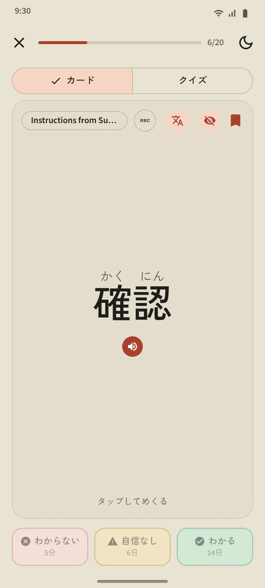
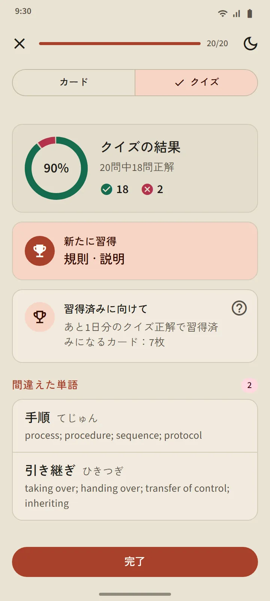
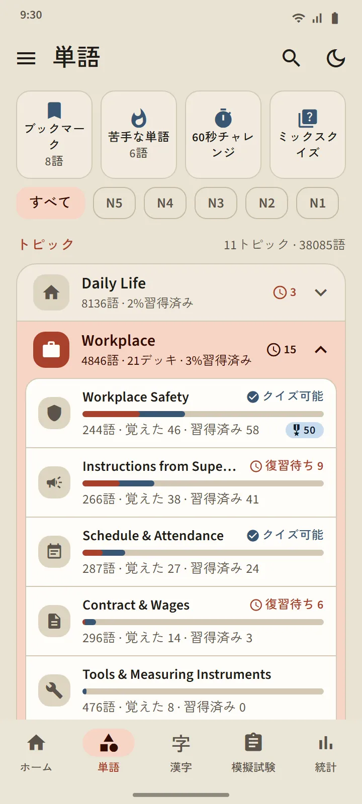
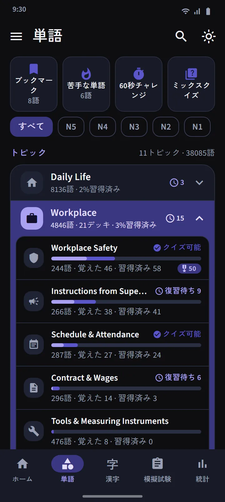

忘れそうなタイミングがわかるカード
カードの表には単語が出ます（必要ならふりがなも）。タップして裏返すと、読み、ローマ字、意味、構成する漢字、発音ボタンが表示されます。そのあと 3 つのボタンのどれかで自己評価します。
復習の時期は、最新のフラッシュカードアプリと同じ間隔反復アルゴリズム FSRS が決めます。各ボタンには、その単語が次に出るタイミング（数分後、数日後、数週間後）が書かれています。「わかる」を押すほど、間隔は長くなります。
- わからないは、どの段階からでも単語を学習中に戻します。
- 自信なしは、間隔を短くします。
- わかるは、単語を覚えたに進め、次の復習を先に延ばします。


4 つの段階、習得済みは証明が必要
どの単語も 未学習、学習中、覚えた、習得済み の 4 段階を進みます。カードで「わかる」を押しても、上がるのは覚えたまでです。習得済みになるには、別々の 3 日にクイズで正解する必要があります。習得済みの単語も復習時期が来ればテストされ、まちがえると段階が下がります。
デッキのクイズは、20 語が覚えたか習得済みになると始められます（小さいデッキは全単語を覚えるとすぐ始められます）。問題は単語から意味、意味から単語の両方向です。最後に、新しく習得した単語、あと一歩の単語、まちがえた単語が表示されます。


トピック別に学び、全単語の進み具合がわかる
単語タブは 11 の分野に分かれ、各分野に小さなデッキが入っています。上のフィルターで、全体を JLPT のレベル一つに絞り込めます。デッキごとに専用の画面があり、達成率のリング、単語ごとの状況つきの一覧、学習中・覚えた・習得済みのフィルター、「学習」と「クイズ」のボタンがあります。
Workplace（職場）分野には、日本で働く人のためのデッキが 21 あります：Workplace Safety, Instructions from Supervisors, Schedule & Attendance, Contract & Wages, Tools & Measuring Instruments, Logistics & Warehousing, Office & Documents, Food Manufacturing, Caregiving, Factory & Production, Industrial Machinery, Electronics & Electrical, Construction, Restaurant & Kitchen, Agriculture, Shipbuilding, Building Cleaning, Fishery, Automotive & Repair, Aviation & Airport, Hospitality。日本での生活のためには、交通、買い物とお金、住まいと家具のデッキ、そして Social & Administration（社会・行政）と Body & Health（体と健康）の分野があります。日本語の表示言語では、分野名とデッキ名は英語で表示されます。
| 分野 | デッキ |
|---|---|
| Daily Life | 16 |
| Workplace | 21 |
| Social & Administration | 8 |
| Body & Health | 8 |
| Traits & Emotions | 8 |
| Word Classes | 5 |
| Technology & Media | 4 |
| Nature & Science | 10 |
| Academic & Opinion | 8 |
| Culture & Religion | 4 |
| Sports & Games | 3 |


特別なデッキとクイック練習
分野の一覧の上には、すべてのデッキから単語を集める 3 つのデッキがあります：ブックマーク（星をつけた単語）、苦手な単語（カードで何度も忘れたり、クイズでまちがえたりした単語が自動で入る）、60秒チャレンジ（1 分間でめくれるだけのカード）。4 つ目のタイル ミックスクイズ は、全デッキの覚えた・習得済みの単語をまとめてテストします。

38,085 語のポケット辞書
上部の検索アイコンから、漢字、かな、ローマ字、意味でどんな単語でも探せます。結果は一致の度合いで並び、ローマ字はつづりの違いがあっても見つかります：shinbun と shimbun、koohii と kōhī、arigato と arigatou は、どれも同じ単語を見つけます。どの単語にも詳細ページがあり、段階と次の復習、意味、読みつきの構成漢字、発音ボタンが表示されます。


レベルと意味の言語
単語のレベルは目安です。国際交流基金は公式の語彙リストを公開していないため、旧 JLPT のリストと使用頻度からレベルを決めています。「JFT」という単語レベルは別にありません。JFT-Basic は N5・N4 と同じ基礎語彙に、職場の語彙を加えて出題されます。
意味は、韓国語と中国語（繁体字）を含む 15 言語ですべてそろっています。翻訳言語は、設定で表示言語とは別に選べます。
| レベル | 単語 | 無料 |
|---|---|---|
| N5 | 1,030 | 1,007 |
| N4 | 2,044 | 1,503 |
| N3 | 11,230 | 4,097 |
| N2 | 11,309 | 2,290 |
| N1 | 12,472 | 503 |